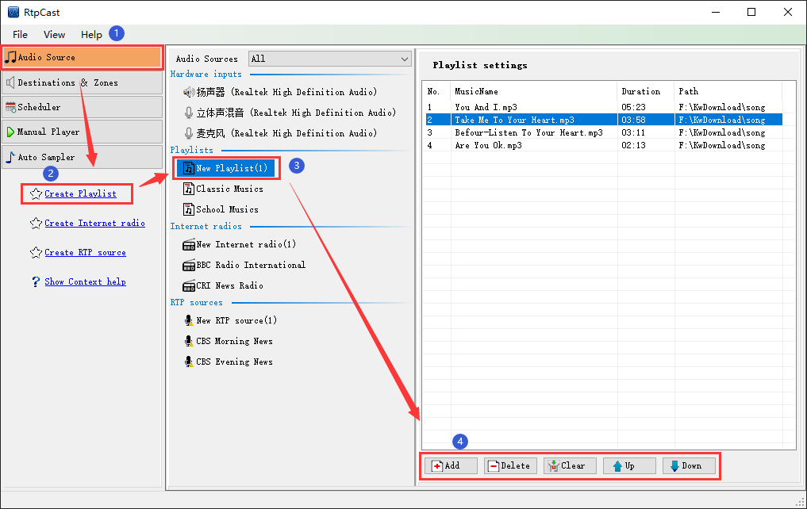

|  |
|
Introduction |
|
Playlists are used to manage local audio files (Mp3). Users can create playlists according to the classification of application scenarios to facilitate play operations. |
|
Operation |
| (1) Click the [Create Playlist] in the left navigation panel, or right-click in the blank area of "Playlists" in the middle to pop up the menu, and then click the [Create Playlist] menu item. By default, the sub item name "New Playlist (x)" is generated(x = 1,2,3...). At this time, the user can right-click the sub item,and then rename or delete the sub item on the pop-up menu. |
| (2) In the "Playlist settings" panel on the right, you can [Add], [Delete], move [Up] or [Down] audio files, and [Clear] the playlist. |